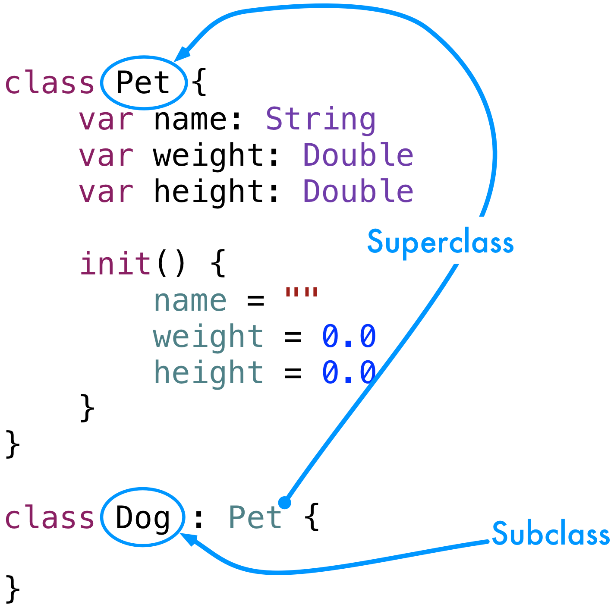
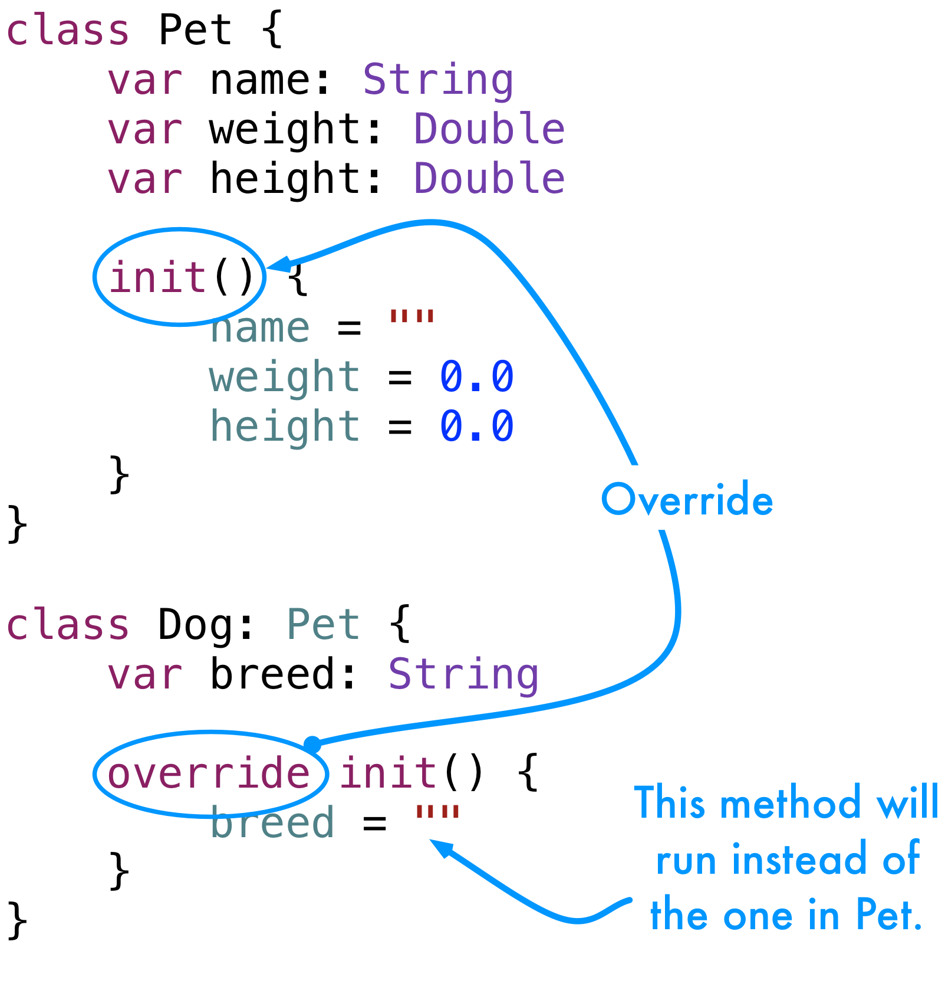

We can have as many classes inherit from Pet as we want.
1 2 | var cat1 = Cat()
var rabbit1 = Rabbit()
|

Super and Sub!
What do we call these things?
Superclass and Subclass

We use the word subclass as a verb, too. We will say, "You should subclass the Pet class."
Extending a Class
If this was the only point to subclassing it would still be quite useful. There's a lot more, though.
We can add new variables, constants, and functions to a class. Let's add a new property to our Dog class.
1 2 3 | class Dog: Pet {
var breed: String
}
|
That's a start but the compiler gives this error now:
1 | Swift Compiler Error: Class 'Dog' has no initializers
|
What's the problem? As long as we didn't add new variables we were using the Pet init() function. With the new variable we have to have our own now.
1 2 3 4 5 6 7 | class Dog: Pet {
var breed: String
init() {
breed = ""
}
}
|
1 | Swift Compiler Error: Overriding declaration requires an 'override' keyword
|
OK, there's still a problem. We are subclassing something that already has that function. This is the next concept in Object-Orientation, overriding.
Override
When a subclass has a function that's the same as one in its superclass we have to add some syntax. We need the override keyword.
1 2 3 4 5 6 7 | class Dog: Pet {
var breed: String
override init() {
breed = ""
}
}
|
There, that fixes the compiler error, are we done yet? Not quite.

Hmm, that phrase "instead of" is a problem. Does that mean the variables in the superclass won't get initialized? Yes, and we need to fix that.
A subclass can call methods in its superclass, we just have to use the super keyword. First, comment out the previous Dog class.